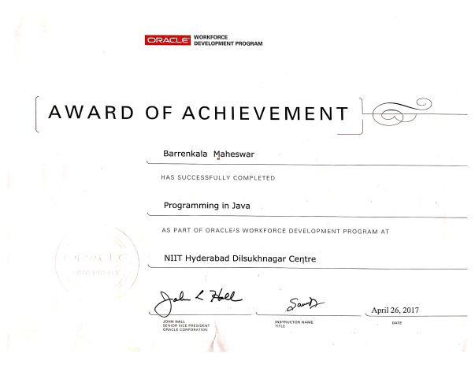
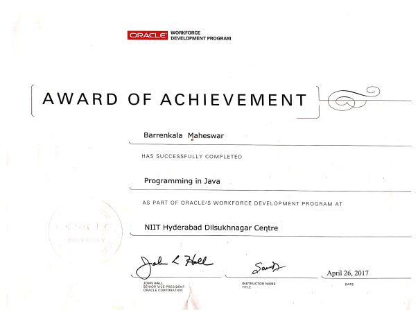

I am a certified CSS expert, having successfully completed the Certification of Achievement for CSS from the Cambridge Certification Authority (CAA). This certification validates my proficiency in creating visually appealing and responsive web layouts using CSS. My expertise in CSS empowers me to design and develop modern, user-friendly websites that are optimized for various devices and browsers.